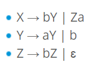
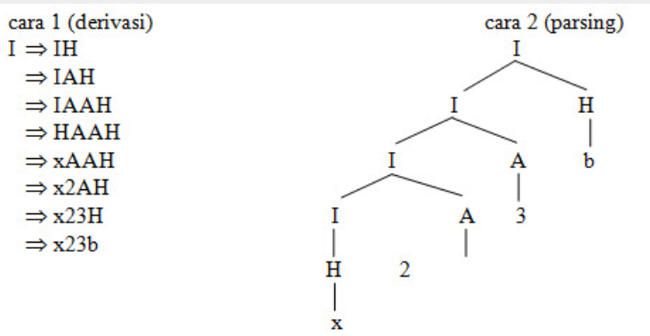

Andi Andhika
Mahasiswa | D121181511 | Founder of Villa Bukit Hijau Malino
Mahasiswa | D121181511 | Founder of Villa Bukit Hijau Malino
CFG atau Context Free Grammar adalah tata bahasa formal di mana setiap aturan produksi adalah dalam bentuk A → B di mana A adalah pemproduksi, dan B adalah hasil produksi. Batasannya hanyalah ruas kiri adalah sebuah simbol variabel. Dan pada ruas kanan bisa berupa terminal, symbol, variable ataupun ɛ, Contoh aturan produksi yang termasuk CFG adalah seperti berikut ini:

CFG adalah tata bahasa yang mempunyai tujuan sama seperti halnya tata bahasa regular yaitu merupakan suatu cara untuk menunjukkan bagaimana menghasilkan suatu untai-untai dalam sebuah bahasa.
CFG perlu disederhankan dengan tujuan untuk melakukan pembatasan sehingga tidak menghasilkan pohon penurunan yang memiliki kerumitan yang tak perlu atau aturan produksi tak berarti. Berikut merupakan langkah-langkah dalam melakukan penyederhanaan CFG:
- Eliminasi ɛ-production
- Eliminasi unit production
- Eliminasi useless symbol
Proses penurunan / parsing bisa dilakukan dengan cara sebagai berikut:
- Penurunan terkiri (leftmost derivation): simbol variabel terkiri yang di perluas terlebih dahulu.
- Penurunan terkanan ( rightmost derivation ) : simbol variabel terkanan yang diperluas terlebih dahulu.
Misal : Grammar sbb :
- S → aAS | a
- A → SbA | ba
Untuk memperoleh string ‘aabbaa’ dari grammar diatas dilakukan dengan cara :
- Penurunan terkiri: S => aAS => aSbAS => aabAS => aabbaS => aabbaa
- Penurunan terkanan : S => aAS => aAa => aSbAa => aAbbaa => aabbaa
Contoh Lain:
Diketahui grammar G = {I → H | I H | IA, H → a| b | c | … |z, A → 0 | 1 | 2| …|9}
dengan I adalah simbol awal.Berikut ini kedua cara analisa sintaks untuk string x23b.
